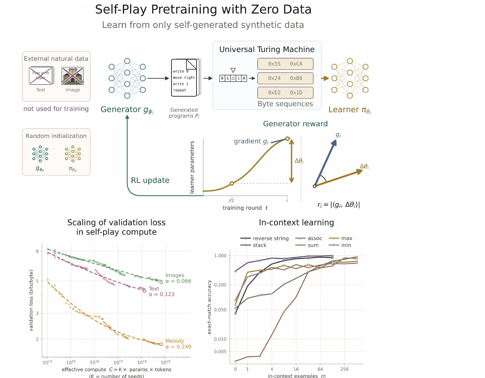
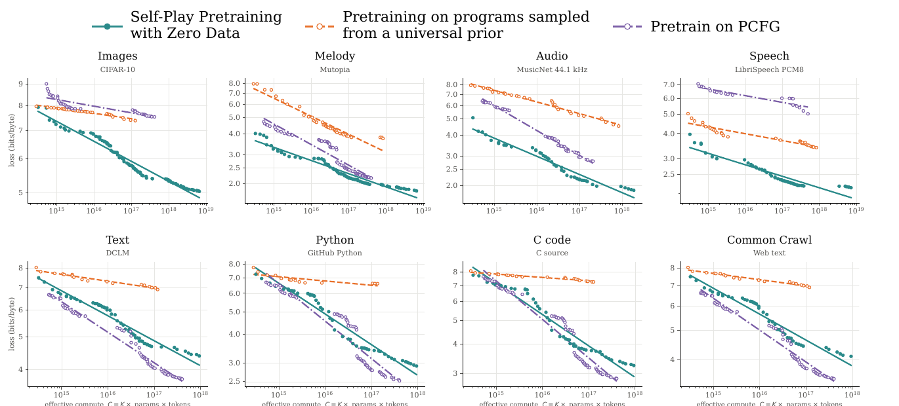
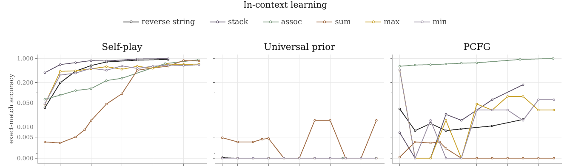
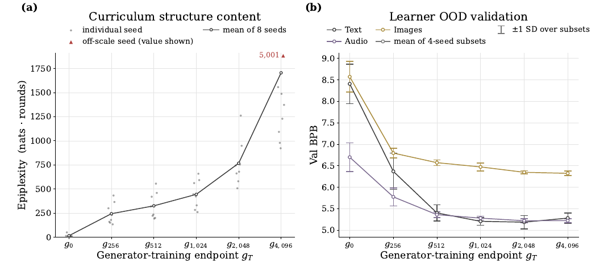
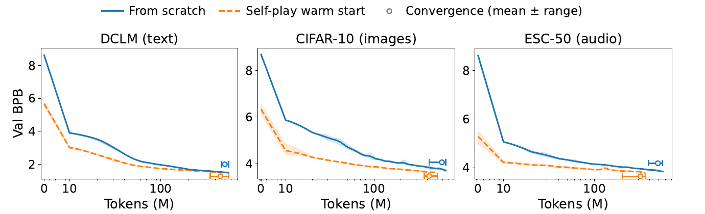

Self-Play Pretraining with Zero Data：让模型从「零数据」里长出预训练

目标
不看任何自然数据，从随机初始化把「有用的预训练数据」当作一个可搜索空间，让算力（而非人类知识）成为扩展的唯一瓶颈。
搜索空间
通用图灵机（Brainf*ck 变体 + 10 个宏）上的全体程序——任何可计算的数据生成过程原则上都能被表示。灵感来自 Solomonoff 归纳。
驱动力
生成器用 RL 学一个「学习进度奖励」：奖励那些让学习器在近期学习方向上继续进步的程序，形成自适应课程。
验证
纯迁移测试——生成器和学习器都没碰过自然数据，却在 6 类自然模态上得到与自然数据训练相当的幂律缩放指数 + 涌现 ICL。
1. 出发点 (Motivation)
现代语言模型的进步靠的是「在更多数据上预训练」。但这些数据仍然是替模型策划好的：大规模数据清洗、数据配比设计、手工设计的合成生成器——处处是人类注入的归纳偏置，而数据的总量最终受限于「人类知识」这个天花板。
作者问了一个更激进的问题：能不能把 Bitter Lesson 推广到训练数据本身？ 即让模型自己学会生成对自己最有用的数据，从而开出一条「只靠算力就能持续变强」的自足路径。
这篇论文提出的答案是 Self-Play Pretraining with Zero Data (SPZD)，一个从零数据预训练的自对弈算法。它把「造数据」形式化成在全体可计算结构的空间里搜索：
- 用一台通用图灵机当底座，让合成数据空间尽可能富有表达力、尽可能少注入领域偏置——任何可计算的数据生成过程都能写成一个程序。
- 但这个空间大得吓人，而且只有极小一部分程序能产出对学习器有用的序列；更麻烦的是，「什么有用」会随学习器变强而漂移。
- 所以自对弈是自然的：不预先指定什么结构有用，而让生成器在训练中发现哪些程序此刻对学习器最有用。
这把整套方法放进了普适预测 (universal prediction) 的谱系里——当假设类包含所有可计算数据生成过程、且学习器有无限算力时，归纳是可能的（Solomonoff）。SPZD 想做的，是这套理论的一个高效、可计算的近似。
核心假设：自对弈能发现一批普适的预测规律（复制、递归、层次组合……），这些规律独立于任何单一数据集的「偶然信息」（具体的事实、符号、模态），因此能跨数据生成过程迁移到自然数据上。
Solomonoff 归纳
理想化的普适预测：对一个序列，按「能生成它的最短程序」赋予最高概率（先验 $2^{-|p|}$，越短的程序权重越大）。不可计算，但给了"用程序长度衡量结构"的理论标尺。
通用图灵机 (UTM)
这里是一台 Brainf*ck 变体：8 条单字符指令操作一条字节纸带 + 循环 + 读 / 写字节。任何可计算过程都能写成它的程序。
生成器 / 学习器
两个结构相同的 decoder-only Llama。生成器 $g_\phi$ 是"程序上的语言模型"（用 RL 训）；学习器 $\pi_\theta$ 是"字节上的语言模型"（用交叉熵训）。
学习进度奖励
生成器的奖励信号：一个程序诱导的学习器梯度，与学习器"最近走过的方向"有多对齐。对齐 = 这个程序在教学习器它正在学的东西。
偶然 vs 普适信息
作者把自然数据里的预测信息拆成两块：偶然信息 $D_c$（某个世界特有的事实）与普适结构 $D_u$（跨多种生成过程共享的结构，如复制 / 递归）。自对弈只能增加 $D_u$。
Epiplexity
Finzi 等人提出的「结构量」度量：一个算力受限的观察者能从数据里榨出多少结构。用来验证生成器随训练确实在产出越来越多结构。
MAP-Elites
一种质量-多样性算法：把程序按"描述子"（循环深度 × 长度）分到 36 个 niche，每个 niche 只留 top-8，保证突变不只盯着最高奖励程序。
BPB (bits/byte)
字节级建模的损失单位：预测下一个字节的平均比特数。均匀猜 256 种字节 = 8 BPB，越低越好。全篇的 y 轴。
⚠️ 代码来源说明：本文作者未公开官方训练代码（只释放了自对弈发现的程序清单
hits.jsonl）。本文所有代码引用来自一个高质量的第三方复现 github.com/Maverick-Ansh/self-play-pretraining-zero-data——它的每个模块 docstring 都逐句引用了论文的对应小节，甚至从作者释放的hits.jsonl反推了论文没写死的常数（如纸带长度）。引用它是为了给论文主张一个具体可执行的锚点；凡是复现自行补齐 / 与论文可能有出入的地方，我都会明确标注。凡标「等价伪代码」的块是从论文散文重构、非逐字。
2. 方法 (Method)
一轮自对弈（round \(e\)）分三步：
- 程序生成：从生成器采样 \(N\) 个程序 \(\{x_i\}_{i=1}^N \sim g_\phi\)。
- 执行：每个程序在 UTM 上跑，配一条随机输入纸带 \(\omega_i\)，得到字节输出 \(y_i = U(x_i,\omega_i)\)。
- 更新：学习器对这批输出走一步梯度（标准 next-token 交叉熵）；生成器走一步 policy gradient（用学习进度奖励），外加对已有 / 突变程序的 SFT（防遗忘 + 促探索）。
2.1 程序空间：一台「每个字符串都能跑」的图灵机
生成器的搜索空间是 Brainf*ck 变体的程序。字母表 \(\mathcal{A}=\{\texttt{< > + - [ ] , .}\}\)（8 条原语）+ 10 个宏（Table 4，如 Z=[-] 清零、R=[->+<] 搬运到右邻）+ 终止符 F，共 19 个 token。程序 \(x\in\mathcal{A}^{\le L}\) 在 UTM 上配随机纸带 \(\omega\) 执行：
—— 翻译: 给程序 $x$ 一条随机初始纸带 $\omega$，机器吐出的前 $T$ 个字节就是学习器的一条训练样本。随机纸带让「同一个程序」能表示「一个输出分布」而非单一序列。
设计的精髓是每个字符串都可执行、且必定终止：语法上唯一可能出错的是括号不匹配——直接当 no-op 处理；纸带是环形的（指针移出边界回绕），单元值 mod 256；跑到步数上限 / 程序尾 / 第 \(T\) 个字节，三者取先到者停机，早停后用 0 填充。没有任何异常路径——这对「把程序当 RL 动作空间」至关重要：生成器采样出的任何 token 串都是一个合法动作。
下面是复现里的 UTM 解释器核心循环，逐条对应上面的语义：
repo/spp/machine.py:L120-L165 — 忠实第三方复现：jit 编译的 Brainf*ck 解释器，环形纸带 + mod 256 + 括号不匹配当 no-op + 早停零填充
@njit(cache=True, parallel=True)
def _run(ops, starts, seeds, T, max_steps, tape_cells, out, n_out, steps_used, depth_max):
N = starts.shape[0] - 1
jump = np.empty(ops.shape[0], dtype=np.int64)
for p in prange(N):
lo, hi = starts[p], starts[p + 1]
_match(ops, lo, hi, jump) # 括号配对；不匹配的 jump=-1 → 被当 no-op
tape = np.zeros(tape_cells, dtype=np.int64)
rng = np.uint64(seeds[p])
ptr, pc, steps, n, depth, dmax = 0, lo, 0, 0, 0, 0
while pc < hi and steps < max_steps and n < T: # 三个停机条件
op = ops[pc]
if op == 0: ptr = (ptr + 1) % tape_cells # '>' 环形右移
elif op == 1: ptr = (ptr - 1) % tape_cells # '<' 环形左移
elif op == 2: tape[ptr] = (tape[ptr] + 1) % MODULUS # '+' mod 256
elif op == 3: tape[ptr] = (tape[ptr] - 1) % MODULUS # '-'
elif op == 4: out[p, n] = tape[ptr]; n += 1 # '.' 发射一个字节
elif op == 5: # ',' 从随机纸带 w 读一个字节
rng, r = _splitmix(rng); tape[ptr] = r & np.uint64(255)
elif op == 6 and jump[pc] >= 0: # '[' 进入或跳过循环
if tape[ptr] == 0: pc = jump[pc]
else: depth += 1; dmax = max(dmax, depth)
elif op == 7 and jump[pc] >= 0: # ']' 回跳或离开
if tape[ptr] != 0: pc = jump[pc]
else: depth -= 1
pc += 1; steps += 1
n_out[p] = n; steps_used[p] = steps; depth_max[p] = dmax
注意 depth_max：程序运行时的最大动态循环深度会被记下来——它是后面 MAP-Elites 分 niche 的描述子之一。这是"执行行为"而非"源码文本"的特征，很聪明。
2.2 核心：学习进度奖励（本文最关键的一步）
生成器的奖励必须能在没有任何外部反馈下识别「有用结构」。一个朴素想法是奖励「难预测的序列」（越难 loss 越高）——但这有致命漏洞：往一个本来可预测的序列里注入随机字节，就能让它任意变难，却毫无可学结构。
作者的解法：奖励一个程序，当它建立在学习器已经学到的东西之上。直觉是——可复用的结构会让学习信号累积，而学不会的怪癖不会。具体地，用一个「回看窗口」定义学习器的近期参数移动，再看新程序的梯度是否与之对齐：
—— 翻译: $\delta\theta_e$ 是学习器从"半程 checkpoint" $\theta_{\lfloor e/2\rfloor}$ 到现在走过的参数位移——它代表"学习器最近在往哪个方向学"。$P_e$ 是从 AdamW 优化器状态里取出的对角预条件（每个参数的有效步长）。奖励 = 程序 $i$ 诱导的学习器梯度，在这个 AdamW 内积下，与"最近学习方向"的对齐幅度。
这个奖励精确地把课程锁在前沿：
- 已掌握的程序 → 梯度近乎为零 → 奖励低（没得学了）。
- 学不会 / 无关的程序 → 梯度与学习方向不对齐 → 奖励低（学了也白学）。
- 既没掌握、又延续已有能力方向的程序 → 高奖励。
回看窗口取 \(\lfloor e/2\rfloor\)（而非上一轮）是为了：让需要很久才显现的信号有时间累积，用增长的窗口平滑短期波动，同时让早期错误最终被遗忘。
工程精髓——forward-mode AD (JVP)：注意方向 \(v=P\odot\delta\theta\) 对池子里所有程序都一样，变的只是每个程序的梯度。反向模式要对每个程序各跑一次 backward（\(N\) 次）才能拿到 per-example 梯度；而前向模式把这个唯一的切向量 \(v\) 一次推过前向过程，直接吐出整个方向导数向量 \([\langle\nabla\mathcal{L}_1,v\rangle,\dots]\)。这就是为什么作者要专门实现一个 JVP flash-attention 核（论文脚注指向 github.com/amorehead/jvp_flash_attention）。
repo/spp/reward.py:L58-L91 — 忠实第三方复现：用 torch.func.jvp 一次前向算出整个池子的学习进度奖励（Eq. 2）
def preconditioner(opt, model):
"""P = lr / (sqrt(v_hat) + eps)，逐参数从 torch AdamW 状态里取出。"""
P = {}
for group in opt.param_groups:
b2, eps, lr = group["betas"][1], group["eps"], group["lr"]
for p in group["params"]:
st = opt.state.get(p)
if not st: return None # 第 1 步前还没有优化器状态
v_hat = st["exp_avg_sq"] / (1 - b2 ** float(st["step"]))
P[id(p)] = lr / (v_hat.sqrt() + eps)
return {n: P[id(p)] for n, p in model.named_parameters()}
def rewards(model, opt, snaps, e, X, n_out, chunk=64, signed=False):
P = preconditioner(opt, model)
_, past = snaps.lookback(e) # theta_{floor(e/2)}
if P is None or past is None:
return torch.zeros(X.shape[0], device=X.device) # 头几轮 delta_theta=0 → 奖励 0
params = {n: p.detach() for n, p in model.named_parameters()}
v = {n: P[n] * (past[n] - params[n]) for n in params} # v = P ⊙ delta_theta，对全池共享
out = []
for lo in range(0, X.shape[0], chunk):
f = lambda prm: seq_losses(model, prm, X[lo:lo+chunk], n_out[lo:lo+chunk])
_, dL = jvp(f, (params,), (v,)) # 一次前向拿到一批 <grad L_i, v>
out.append(dL)
r = torch.cat(out).float()
return r if signed else r.abs()
绝对值很重要：Table 5 的消融显示，去掉绝对值（signed）会变差——「负向对齐」也是有用结构的信号（见 §4）。
2.3 RL 目标：Solomonoff 先验 + GRPO + Expert Iteration
生成器用一个 KL 正则的期望奖励目标训练：
—— 翻译: 最大化期望奖励，同时用 KL 把策略拉住不要离先验 $g_0$ 太远。$g_0$ 是"均匀先验"：每个 token 等概率，程序概率随长度指数衰减——正是 Solomonoff 先验 $2^{-|p|}$ 的可计算类比（越短的程序先验越高）。生成器初始化就在 $g_0$ 附近。
因为 vanilla policy gradient 方差大，用 GRPO（batch 级）估计优势，并对回放（off-policy）样本做序列级重要性比校正：
—— 翻译: 优势 = 奖励在本轮池内的标准化 z-score，再减去 KL 惩罚项。$\rho_i$ 是重要性比：新策略下这个程序的概率 / 它当初被采样时的概率——回放的旧程序靠它纠偏（新鲜样本 $\rho_i=1$）。突变程序被排除（它们没有良定义的采样概率）。
再加一个 Expert Iteration（reward-weighted SFT）项防止遗忘：把高奖励程序按归一化权重 \(w_i=[r_i]_+/\sum_j[r_j]_+\) 蒸馏回生成器。总目标 \(\mathcal{L}_{\text{generator}}=\mathcal{L}_{\mathrm{PG}}+\lambda_{\mathrm{EI}}\mathcal{L}_{\mathrm{EI}}\)（\(\lambda_{\mathrm{EI}}=1\)）。
repo/spp/selfplay.py:L106-L130 — 忠实第三方复现：一步生成器更新，GRPO 优势 + 重要性比 + Expert Iteration（Eqs. 3-5）
def generator_step(gen, opt, scaler, bodies, kind, lp_old, charged, r, cfg):
lp = G.logprob(gen, bodies, cfg.max_body) # log g_phi(x)，带梯度
with torch.no_grad():
lg0 = torch.as_tensor(log_g0(charged), ...) # log g0(x) = -l(x) log|A|
A = (r - r.mean()) / (r.std() + 1e-8) - cfg.beta * (lp.detach() - lg0) # GRPO 优势
log_rho = (lp.detach() - lp_old).clamp(-20, 20) # 序列级重要性比（截断）
rho = torch.where(kind_t == 0, torch.ones_like(log_rho), log_rho.exp()) # 新鲜样本 rho=1
w = r.clamp(min=0); w = w / w.sum() if w.sum() > 0 else w # EI 权重
pg = kind_t != 1 # 突变行不进 PG 项
L_pg = -(rho * lp * A)[pg].mean()
L_ei = -(w * lp).sum()
loss = L_pg + cfg.lambda_ei * L_ei
... # backward + AdamW step
值得注意的一个细节（复现里 torch.nn.init.zeros_(gen.lm_head.weight)）：生成器的输出头初始化为全零，于是初始策略在每个位置都是字母表上的均匀分布，即精确等于 \(g_0\)——「初始化在 \(g_0\) 附近」被做成了精确相等。
2.4 程序池：fresh + mutation + replay，用 MAP-Elites 保多样性
每轮的程序池 \(\mathcal{B}_e=\mathcal{B}_e^{\text{fresh}}\,\dot\cup\,\mathcal{B}_e^{\text{mut}}\,\dot\cup\,\mathcal{B}_e^{\text{replay}}\)：新鲜采样负责全局探索，突变负责局部精炼，回放负责保住早期发现的结构。学习器对三类都训。
突变用 MAP-Elites：每个程序按两个描述子分 niche——(i) 最大动态循环深度（0–8，更深的截到最后一档），(ii) 程序体长度（分桶 ≤8/16/32/>32），共 \(9\times4=36\) 个 niche。只有拿到正奖励的程序才进档，每个 niche 留 top-8；存储的奖励每轮衰减 0.97（让新程序能替换掉过时的精英）；突变父代在占用的 niche 之间均匀选，而非在全体程序间均匀——保住深嵌套等稀有结构行为的代表性。
repo/spp/pool.py:L26-L58 — 忠实第三方复现：MAP-Elites 档案，按 (循环深度 × 长度) 分 36 niche，每 niche top-8，奖励衰减 0.97（App. G）
class Archive:
def __init__(self, per_niche=8, decay=0.97):
self.cells, self.k, self.decay = {}, per_niche, decay
def step_decay(self):
for c in self.cells.values():
for b in c: c[b] *= self.decay # 奖励衰减，过时精英会被替换
def add(self, bodies, rewards, depths):
for b, r, d in zip(bodies, rewards, depths):
if r <= 0: continue # 只有正奖励程序进档
cell = self.cells.setdefault(niche(d, len(b)), {}) # niche = f(循环深度, 长度)
if r > cell.get(b, -1.0): cell[b] = float(r)
if len(cell) > self.k: del cell[min(cell, key=cell.get)] # 每 niche 只留 top-8
def mutants(self, n, rng, max_body):
occupied = [c for c in self.cells.values() if c]
out = []
for _ in range(n):
cell = occupied[rng.integers(len(occupied))] # 在占用 niche 间均匀选父代
parents = list(cell)
out.append(mutate(parents[rng.integers(len(parents))], rng, max_body))
return out
3. 结论 (Key findings)
3.1 六类自然模态上的「普适 zero-shot 缩放律」
核心实验：从随机初始化用自对弈训不同规模的 Transformer，然后zero-shot（不做任何梯度更新）在 held-out 的自然数据上测。对每个数据集，在 (模型规模 × 自对弈轮数 × ensemble 大小) 上构造 compute-optimal 前沿，拟合 \(L(C)=E+A\,C^{-\alpha}\)。
结果：跨文本、图像、旋律、音频、语音、代码，单一家族的自对弈模型都表现出可预测的幂律改善，指数与直接在自然数据上训练相当（甚至略高，见 Fig 1 左下角：图像 \(\alpha=0.066\)、文本 \(\alpha=0.123\)、旋律 \(\alpha=0.249\)）。关键是——这些全是 zero-shot，训练中从未加入任何自然数据的梯度。
各模态拟合指数（Table 2，\(L(C)=A\,C^{-b}+E\)）与文献对比：
| 模态 / 数据集 | 本文 \(b\) | 文献 \(b\) | 备注 |
|---|---|---|---|
| 文本 (DCLM) | 0.123 | 0.048–0.099 | 略高于文献 |
| 图像 (CIFAR-10, HWC 交错) | 0.145 | 0.065–0.10 | 略高 |
| 图像 (CIFAR-10, 像素) | 0.066 | — | |
| 音频 8-bit PCM | 0.260 | 0.12–0.14 | 明显更高 |
| 音频 16-bit PCM | 0.141 | — | |
| 旋律 (Mutopia MIDI) | 0.249 | — | 最陡之一 |
| 数学 (Metamath set.mm) | 0.129 | 0.17 | |
| DNA (8-symbol) | 0.435 | 0.01–0.06 | 异常地高——见 §5 存疑 |
| 代码 (C source) | 0.116 | 0.17 | |
| 代码 (Python) | 0.113 | — |
3.2 「有通用程序空间」还不够，「自适应课程」才是关键

这是最有说服力的对照：两个基线和自对弈共享同一个程序空间，唯一区别是采样分布是否自适应。固定通用先验（\(g_0\) i.i.d. 采样）缩放极慢——证明自适应课程是主因，而非「通用空间」本身。而 PCFG（一个特化的固定先验）在语言上反超自对弈——说明普适 ≠ 对某一模态最优：自适应买来的是广度，特化买来的是深度。
3.3 涌现 in-context learning，且生成器"发现"数学数列

-
ICL 涌现（Fig 4）：自对弈学习器在 6 个完全 held-out 的任务上都涌现出 in-context learning——包括动态索引（reverse string）、模拟上下文无关文法（stack）、上下文检索（associative recall）、以及在上下文里学会数学关系（sum/max/min）。固定通用先验几乎学不会，PCFG 只会 associative recall。Fig 5 还给了 SUM 任务的可解释轨迹：模型先输出先验里最常见的字节 → 开始复制 → 短暂过度自信后崩溃、熵升高 → 4 个示例后学会加低 4 位 → 8 个示例后学会高 4 位 → 锁定正确策略。
-
发现数学结构（Table 1/3）：生成器在自对弈中自发写出输出为可辨识数列的程序——等差（round 0）、几何（round 256）、斐波那契 / 二次 / 三次（round 512）。作为对照，从固定通用先验里均匀采样 \(1.64\times10^8\) 个程序，除等差外一个非等差数列家族都没出现（期望首现轮数 \(\gt 53{,}000\)）。这是自对弈能高效定位普适数据的一个直接机制证据。

- 自对弈 = 廉价的 pre-pretraining（Fig 6 / App. A）：把自对弈 checkpoint 当作自然数据训练的初始化（"warm start"），在 DCLM/CIFAR-10/ESC-50 上都比从零训练更快到达同一损失水平（ESC-50: 320M vs 496M tokens；CIFAR-10: 421M vs 588M）。不过训练后期差距会明显收窄——最清晰的收益是加速，而非最终损失。

3.4 一个解释性 ansatz：偶然信息 vs 普适结构
为什么「不加自然数据」也能有幂律缩放？作者把 Chinchilla 的数据项拆成两块资源：
—— 翻译: 在标准 Chinchilla 损失 $E+A/N^\alpha+B/D^\beta$ 的基础上，把"数据"拆成偶然信息 $D_c$（世界特有的事实）和普适结构 $D_u$（跨过程共享的结构）两项。
在自对弈里 \(D_c\) 恒为零（没碰自然数据），被吸收进常数 \(E'\)；只有 \(D_u(T)\propto T^\eta\) 随自算力增长。代入得：
—— 翻译: 于是即使没加自然数据，自然数据损失也能随自对弈算力 $T$ 幂律下降——代价是一个更大的不可约误差 $E'$（因为 $D_c$ 永远补不上）。这正是实验观察到的形式。
进一步假设自然数据同时按 \(D_c\propto D^\nu, D_u\propto D^\mu\) 增长，则标准数据缩放指数 \(\beta_{\text{obs}}\approx\min\{\beta\nu,\gamma\mu\}\)——作者据此谨慎推测：学习普适结构可能解释了「扩自然数据」收益里的相当一部分。这是一个 ansatz（假设性框架），不是严格证明。
4. 实现细节 (Implementation notes)
-
架构与 tokenization：学习器和生成器是结构相同的 decoder-only Llama。字节级 tokenization，固定 256 词表——因为 UTM 产出原始字节，且这能做「模态无关」的下一字节预测评测。程序行前缀
S、输出行前缀O。生成器采样时 logits 被 mask 到 19 个合法 token（8 指令 + 10 宏 +F）；学习器输出可以是任意字节。（repo/spp/model.py,repo/spp/generator.py:L26-L60） -
强制终止的巧思：程序位置到达长度上限 \(L\) 时，唯一允许的 token 是
F——所以「封顶的程序」的最后那个F在 \(g_\phi\) 和 \(g_0\) 下概率都是 1，不计入描述长度。「每个程序都终止」被做成了精确的、概率可算的事实。 -
回看快照的内存管理：\(\delta\theta\) 需要 \(\theta_{\lfloor e/2\rfloor}\)。每轮都存是 \(O(e)\) 内存，所以复现每 8 轮存一个快照，取 \(\le\lfloor e/2\rfloor\) 的最新那个；更早的快照（\(\lfloor e/2\rfloor\) 只增不减）直接丢。（
repo/spp/reward.pySnapshots） -
奖励消融印证了设计（Table 5，本文最有信息量的消融）：
| 消融 | 改了什么 | 效果 | 说明 |
|---|---|---|---|
| None（本文） | \(\theta_{\text{past}}=\theta_{\lfloor e/2\rfloor}\) 的规范奖励 | 最好 / 接近最好 | 多数数据集上方差也更低 |
uniform |
去掉生成器，i.i.d. 均匀程序 | 大幅变差 | 自适应课程是主因 |
signed |
去掉绝对值 | 变差 | 「负向对齐」也是有用信号 |
shuffle |
池内打乱奖励 | 差很多 | 仅靠奖励的边际分布不足以驱动进步 |
last_step |
\(\theta_{\text{past}}=\theta_{e-1}\)（只回看一步） | 变差 | 回看大窗口有价值（平滑短期波动） |
loss_delta |
用真实 loss 差 \(L_i(\theta_{\text{pre}})-L_i(\theta_{\text{post}})\) | 更差 | 一阶梯度奖励比有限差分更 informative |
negate |
翻转奖励符号 | 比随机初始化还差 | 反证：奖励确实系统性偏好更好的程序 |
negate 那一行尤其漂亮：如果把奖励取反后模型比随机初始化还烂，说明原奖励确实在全局上偏好「更好」的程序，而不是碰运气。
-
纸带长度是论文没写死、复现反推的（重要 caveat）：论文只说「有限内存」，没给纸带单元数。复现作者用作者释放的
hits.jsonl（6143 个确定性程序的首字节记录）反推：128 单元能复现全部记录但 35/5955 个等差纸带在回绕后离开递推；2048 单元复现全部首字节；4096 单元让全部等差保持但漏 3 条向左回绕的记录。没有单一环形尺寸能复现每一条记录——所以作者的纸带不是"单一尺寸的朴素环形数组"。复现取 2048，只在 0.5% 头会回绕的程序上与作者不符。这是一个论文未充分描述、影响可复现性的点。 -
规模很小：所有实验模型 < 25M 参数、4K 上下文。固定 34.36B token 训练预算（因为用短 warmup + 常数 lr，任一中间 checkpoint 等价于"在该 token 预算处停下的一次 run"，一条长 run 就能回溯性地构造缩放律）。各规模训 \(K\) 个独立种子做 ensemble——ensemble 是有用的（单模型更弱）。
-
超参选择碰了自然数据（诚实的泄漏）：因为纯合成目标没有明显的选超参标准，作者用 DCLM+DNA 上的验证损失做模型选择信号。"limited leakage through hyperparameter selection, but natural data are never used for gradient updates." 即：梯度层面是零数据，但超参选择层面不是严格零数据。
5. 批判性总结 (Critical assessment)
Strengths
- 概念上干净的迁移实验：tabula rasa（两个模型都随机初始化、训练零自然数据）让「zero-shot 迁移到自然数据」成为对"普适结构能否从算力里凭空长出来"的干净检验。这个实验设计本身就是贡献。
- 奖励设计有洞见且被消融充分支撑：学习进度奖励（梯度-轨迹对齐 + AdamW 预条件）避开了「奖励难度」的退化模式，Table 5 的 7 行消融（尤其
negate、shuffle）把它钉得很实。 - 机制证据到位：不只给缩放曲线，还给出「生成器远早于均匀采样发现数列」（Table 1）+「ICL 可解释轨迹」（Fig 5）+「epiplexity 随训练上升」（Fig 3）三条独立证据，支撑"确实在产出可迁移结构"这一因果主张。
- 工程上认真：为了让 per-program 奖励可算，专门上 forward-mode AD（JVP flash-attention），而不是 \(N\) 次 backward。
Limitations / open questions
- 规模是最大的问号：全部 < 25M 参数、4K 上下文。作者自己把"这些结果能否在更大模型上持续"列为最紧迫的未知。小模型上「普适结构是瓶颈」很可能不代表大模型的真实制约。
- DNA 指数 0.435 极其可疑：文献 DNA 缩放指数是 0.01–0.06，本文高出近一个数量级。这大概率是评测口径差异（本文 DNA benchmark 是 8 符号压缩字母表、255 符号窗口，天然易压）而非真实的"自对弈在 DNA 上特别强"。论文把它标为"exceptional case"但解释偏轻。这类跨设置的指数对比（Table 2）整体要谨慎读。
- "Zero Data" 有星号：超参选择用了 DCLM+DNA 验证损失。梯度层面确实零数据，但完整 pipeline 不是严格 zero——标题的强主张需要这个脚注。
- 算力换数据是否划算，未正面回答：这是"用算力替代数据"的极端点，但没有和"直接花同样算力在自然数据上训"做等算力对比。pre-pretraining 的加速收益在训练后期还会收窄（Fig 6）。
- 可复现性：官方未放训练代码，且关键常数（纸带长度）论文没写清、需从释放的 hits 反推、且无单一尺寸能完全吻合。本文的代码结论全部依赖第三方复现。
- 语言上打不过特化先验：PCFG 在文本 / 代码上反超（Fig 2）——"普适"的代价是对任一具体模态都不是最优。作为通用预训练替代品，这是硬伤。
- 成本：每轮都要对整个程序池算一次 JVP 前向 + 学习器一步 + 生成器一步，还要维护 MAP-Elites 档案和回放库——per-round 开销不低。
When to use / not use
- 适合：研究「合成 / 算法数据能教会模型什么普适结构」；给数据稀缺模态（低资源语言、稀有信号）做廉价的 pre-pretraining warm start；把 curriculum learning 里的"前沿"用一个可算的梯度对齐信号来操作化。
- 不适合：当作现成的、能替代自然数据预训练的生产方法（规模未验证、语言上打不过特化先验、等算力性价比未知）；需要"偶然信息"（世界事实）的任务——普适预训练原理上补不了这一块。
延伸阅读 (Further reading)
交叉验证比较 (Cross-validation against similar work) — 这篇处在「用算法 / 合成数据做普适预训练」和「自对弈 / 内在动机课程」两条线的交点，挑 4 篇最相关的对照结论与观察：
| 工作 | 核心结论 | 关键观察 | 与本文的异 / 同 |
|---|---|---|---|
| 本文 (SPZD) | 从零数据 + 自适应 RL 课程，可在 6 类自然模态上得到与自然数据相当的 zero-shot 幂律缩放 | 固定通用先验缩放极慢；生成器远早于均匀采样发现数列 | — |
| Bloem 2025《Universal pre-training by iterated random computation》(arXiv 2506.20057) | 从零自然数据、用迭代随机计算产序列训练，也能随规模改善 zero-shot 预测 | 分布是固定、非自适应的 | 同: 都主张算法数据能凭空长出可迁移结构。异: 本文把分布做成 RL 自适应课程；本文的 Fig 2 正好证明"固定分布缩放慢"，即本文相对它的增量就是自适应性 |
| Grau-Moya et al. 2024《Learning universal predictors》(arXiv 2401.14953) | 在 UTM 采样程序的输出上训神经网络，可摊销 Solomonoff 式普适预测，迁移到 held-out 算法过程 | 程序分布固定（从 UTM 先验采样） | 同: 同样用 UTM 程序输出当训练数据、同样引 Solomonoff。异: 他们不自适应、主要测算法过程；本文联合学习分布并测更广的自然模态 + 拟合缩放律 |
| Zhao et al. 2025《Absolute Zero》(arXiv 2505.03335) | 自对弈 + 零（人类）数据也能提升推理 | 从预训练 LLM 出发、聚焦代码 / 推理任务、用可验证奖励 | 同: "zero data" 自对弈的旗号一致。异: 本文是预训练本身（从随机初始化、学字节级预测），不是在已预训练模型上做推理微调 |
| Poesia et al. 2024《Formal math from intrinsic motivation》(arXiv 2407.00695) | 内在动机（学习进度式奖励）能从零驱动形式数学的课程 | 领域限定在形式数学 | 同: 都用"学习进度"当内在奖励、都从零训。异: 本文的奖励是梯度-轨迹对齐（可算、模态无关），且目标是通用字节预测而非单一形式域 |
分歧的可能成因：这几篇结论方向一致（算法 / 合成数据能教普适结构），差异主要来自三处设置——(1) 分布是否自适应（Bloem/Grau-Moya 固定 vs 本文 RL 学习），这解释了缩放速度差异；(2) 起点（从零 vs 从预训练模型），决定了是"预训练替代"还是"后训练增强"；(3) 评测口径（算法过程 vs 广谱自然模态 vs 推理基准），决定了指数能否直接横向比——本文 Table 2 与文献指数的对比就因这一点需打折扣（尤其 DNA）。
相关工作 (Related work)
- Finzi et al. 2026《From entropy to epiplexity》(arXiv 2601.03220) — 本文用它的 epiplexity 度量验证生成器产出结构随训练增加。
- Papadimitriou & Jurafsky 2020《Learning music helps you read》— 非语言 / 形式结构预训练迁移到语言的早期证据。
- Hu et al. 2025《Pre-training on formal languages imparts linguistic biases》— 形式语言预训练注入语言学偏置。
6. 研究启发 (Transferable takeaways)
1. 把"前沿课程"操作化成梯度对齐
「教学习器它正在学的方向上的新东西」可以不靠启发式，而用一个可算的信号：新样本梯度与学习器近期参数位移在 AdamW 内积下的对齐度。这个奖励在任何自生成课程 / 主动学习里都可复用。
2. 同一切向量 → 用 forward-mode AD 批量算方向导数
当你要对一大批样本算"梯度在同一个方向上的投影"（如影响函数、课程打分），别做 N 次 backward——用 JVP 一次前向拿到整个向量。工程上省一个数量级。
3. 把动作空间设计成"永不失败"
用 Brainf*ck 变体当 RL 动作空间的关键是：任意 token 串都合法、都终止、都有界。想把"程序 / 结构"当 RL 动作，先消灭所有异常路径，采样器才不会浪费在无效动作上。
4. 反直觉点：奖励"难度"会被随机噪声黑掉
直觉上该奖励"难预测的序列"，但注入随机字节就能免费造难度。真正该奖励的是"可学的进步"而非"难度"——这个陷阱在很多 curiosity / hard-example mining 里都存在。
5. 反直觉点：普适 ≠ 最优
特化的固定先验（PCFG）在语言上反超普适自适应搜索。自适应买广度、特化买深度——做通用系统时别默认"更普适就更好"。
6. 数据 = 偶然信息 + 普适结构
把"数据缩放收益"拆成"世界事实 $D_c$"和"跨过程结构 $D_u$"两项资源，是理解"为什么不同分布的合成数据也能帮预训练"的好透镜——合成数据主要在补 $D_u$。
讨论 / Comments
评论托管在本仓库的 GitHub Discussions, 需 GitHub 账号。